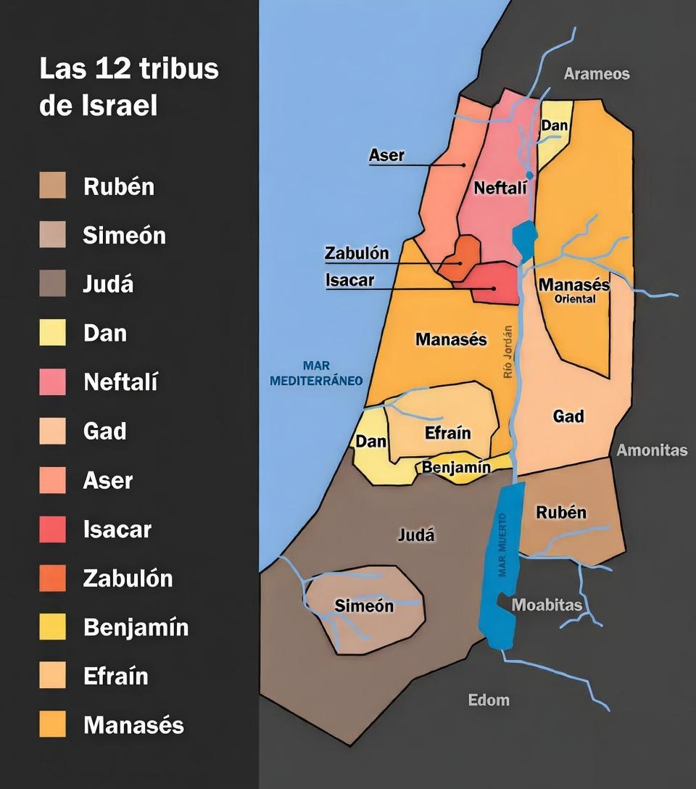

Origen
Las doce tribus de Israel provienen de los hijos de Jacob, quien también fue llamado Israel. Cada tribu representa a un linaje familiar que formó parte fundamental del desarrollo histórico, religioso y cultural del pueblo de Israel.

Listado de las 12 tribus
- Rubén: El primogénito de Jacob.
- Simeón: Hijo de Jacob y Lea.
- Leví: Tribu sacerdotal que no recibió territorio propio.
- Judá: Tribu de donde provino la línea mesiánica y el rey David.
- Dan: Hijo de Jacob y Bilha.
- Neftalí: Hijo de Jacob y Bilha.
- Gad: Hijo de Jacob y Zilpa.
- Aser: Hijo de Jacob y Zilpa.
- Isacar: Hijo de Jacob y Lea.
- Zabulón: Hijo de Jacob y Lea.
- Efraín: Hijo de José.
- Manasés: Hijo de José.
- Benjamín: El hijo menor de Jacob y Raquel.

Contexto histórico
Después de la muerte del rey Salomón, el reino se dividió en dos: el Reino del Norte llamado Israel y el Reino del Sur llamado Judá.
Las diez tribus del norte fueron conquistadas por el Imperio Asirio y con el tiempo se dispersaron entre las naciones, por lo que muchas veces se les conoce como las "Diez Tribus Perdidas de Israel".
Importancia espiritual
Las tribus representan la base histórica del pueblo de Israel y tienen un profundo significado espiritual dentro de la tradición bíblica. Su historia se menciona a lo largo de la Biblia y continúa siendo objeto de estudio, reflexión y fe.